02 · Lockups
로고 조합 (가로형)
심볼 + 워드마크 기본 조합. 컬러 버전은 밝은 글자라 다크 배경이 기본입니다. 밝은 배경/단색 인쇄에는 모노 버전을 사용하세요.
풀 로고 · 다크 (기본)logo-full.svg

모노 · 라이트 적용 예logo-mono.svg (반전)
모노(화이트) · 다크logo-mono.svg
파비콘 / 앱 아이콘favicon.svg
참고 ·
logo-mono.svg 는 순수 흰색이라 밝은 배경에 그대로 쓰면 안 보입니다.
위 "라이트 적용 예"는 filter:invert(1) 로 검정 전환한 모습입니다. 인쇄 시엔 흰색/검정 중 배경 대비가 큰 쪽을 선택하세요.